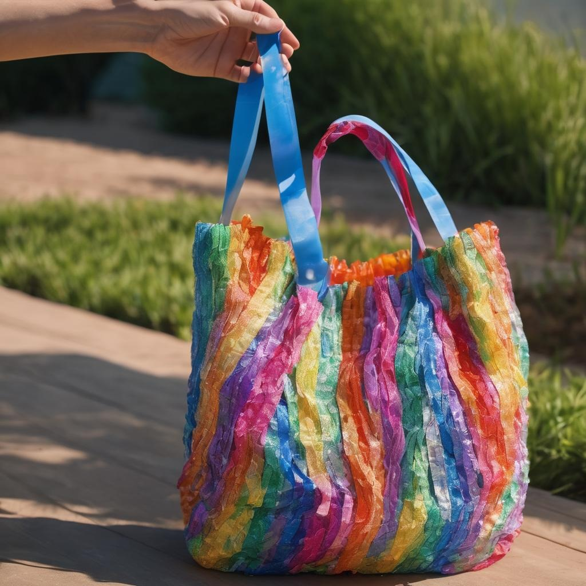
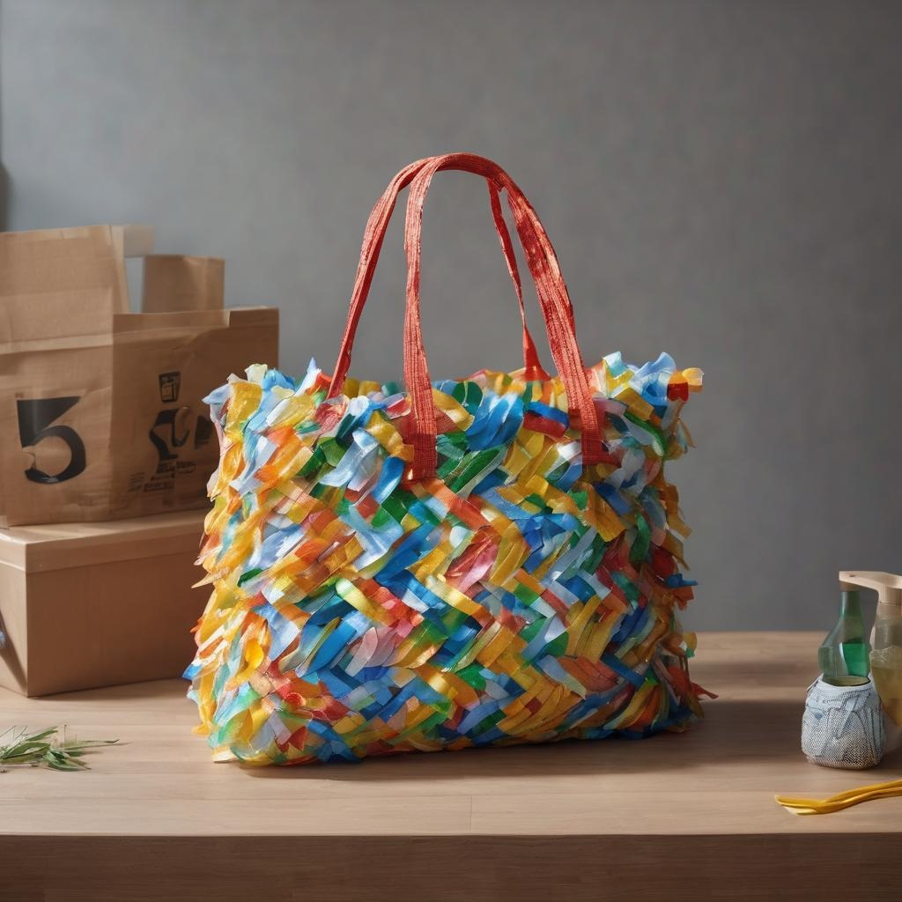
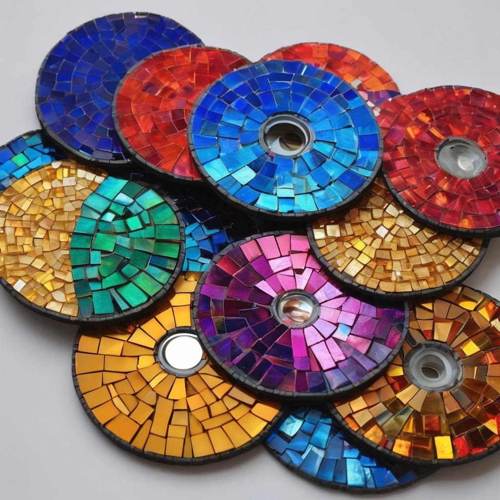
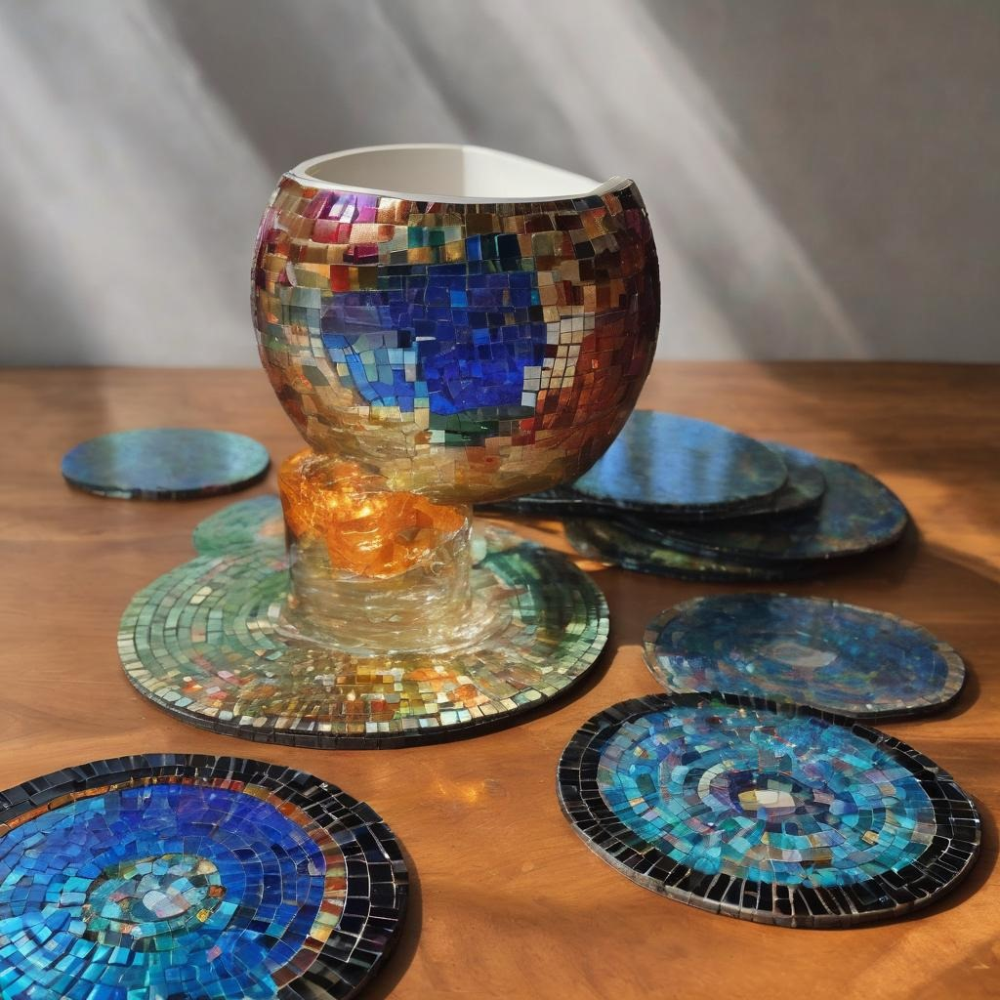
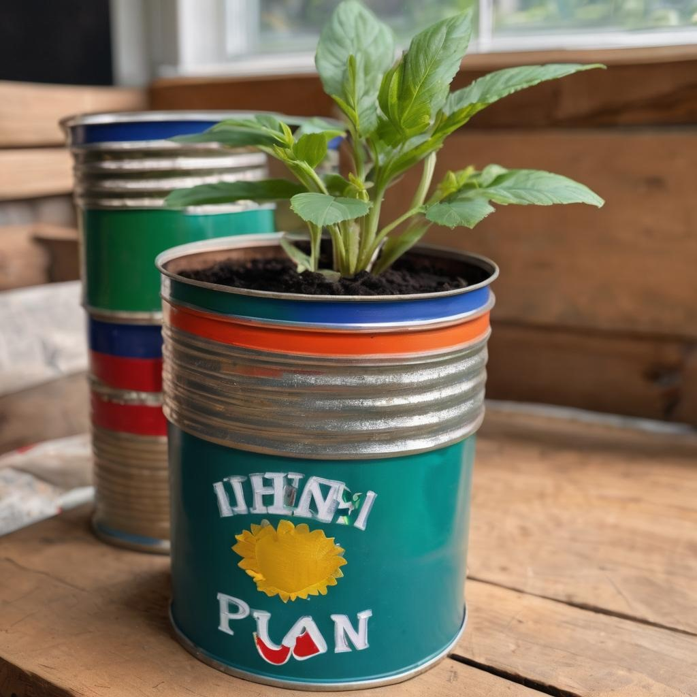
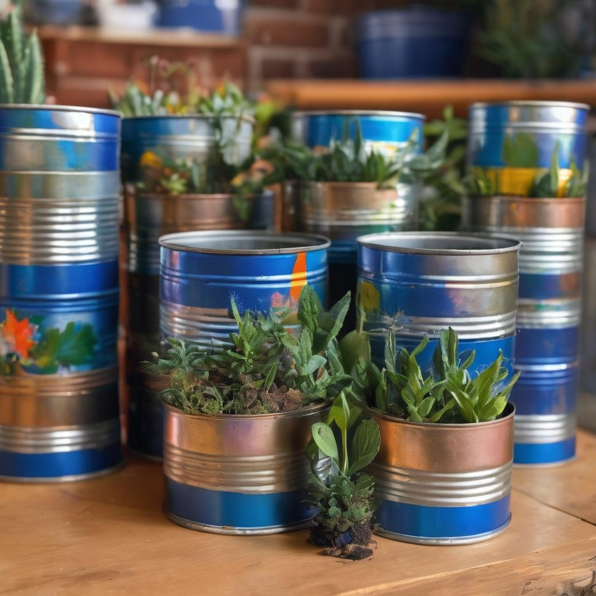
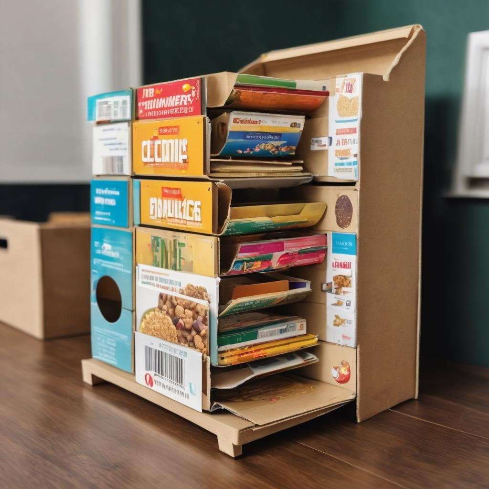
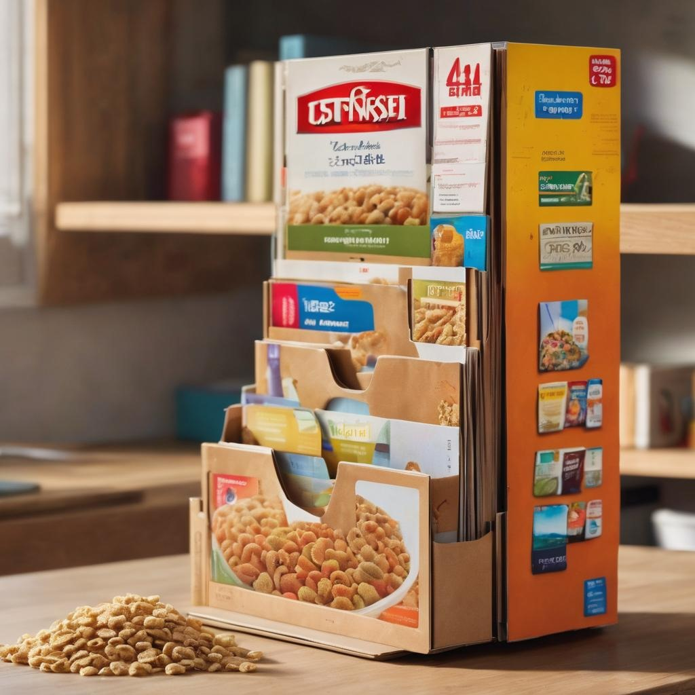

1. Plastic Bag Weaving:
- Materials:
- Plastic bags (grocery bags, produce bags, etc.)
- Scissors
- Procedure:
- Flatten and fold plastic bags into strips.
- Cut the folded bags into strips, creating plastic "yarn."
- Weave the plastic strips together to create a mat, bag, or decorative piece.
- Secure the ends by tying knots or melting them together with heat (use caution with this
method).
- Note: This activity turns plastic bags into a useful and durable item while
reducing plastic waste.


2. CD Mosaic Coasters:
- Materials:
- Old CDs or DVDs
- Broken tiles, glass, or colored paper
- Glue
- Grout (optional)
- Procedure:
- Break tiles or glass into small pieces or cut colored paper into mosaic-sized shapes.
- Apply glue to the surface of the CD.
- Arrange the mosaic pieces on the CD, creating a colorful pattern.
- Allow the glue to dry completely.
- Optionally, apply grout between the mosaic pieces and wipe away excess.
- Note: This activity transforms old CDs into stylish and functional coasters.


3. Tin Can Planters:
- Materials:
- Empty tin cans (rinsed and labels removed)
- Acrylic paint or spray paint
- Paintbrushes (if using acrylic paint)
- Soil and plants or seeds
- Procedure:
- Paint the tin cans with vibrant colors or creative designs.
- Allow the paint to dry completely.
- Fill the cans with soil and plant your favorite flowers, herbs, or succulents.
- Water the plants as needed and place the tin can planters in a sunny spot.
- Note: This activity repurposes tin cans into decorative planters for a touch of
greenery.


4. Cardboard Box Organizer:
- Materials:
- Sturdy cardboard boxes (cereal boxes, shoeboxes, etc.)
- Wrapping paper, fabric, or decorative paper
- Glue or tape
- Scissors
- Procedure:
- Cut the cardboard boxes to the desired size and shape for organization.
- Cover the boxes with wrapping paper, fabric, or decorative paper using glue or tape.
- Arrange the covered boxes in a configuration that suits your storage needs (stacking or side
by side).
- Use the organizers to store office supplies, accessories, or other household items.
- Note: This activity turns cardboard boxes into attractive and functional
organizers.

